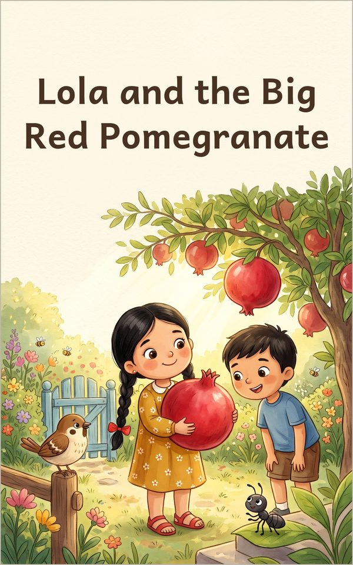

Lola and the Big Red Pomegranate
A Cozy Bedtime Story About Sharing for Kids Ages 3–6
Free
Free download: PDF and EPUB, or read online
- No sign-up, no payment
- Reads on phone, tablet, e-reader or computer
- Free to print and share with your family and class
Lola finds the biggest, reddest pomegranate in the whole wide world, and she wants to keep every shiny seed for herself. But when her neighbor, a little sparrow, and a tiny ant all come asking, something feels missing from her sweet treat. With the help of her wise grandma, Lola discovers that good things taste even sweeter when we share them. A warm picture book with rhythm, repeated phrases and sound words, made for reading aloud with children ages 3–6.